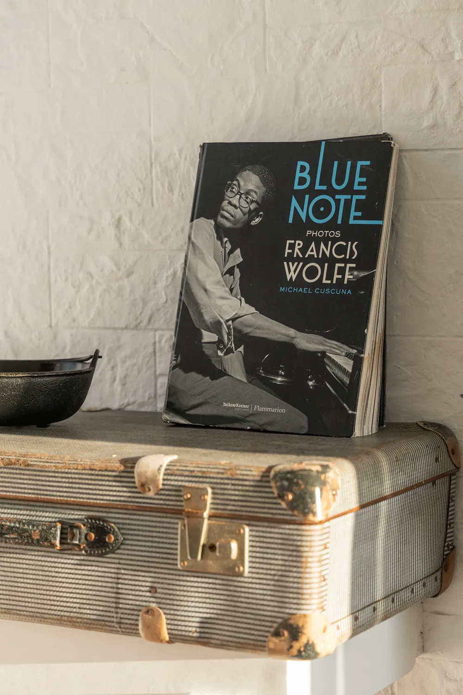
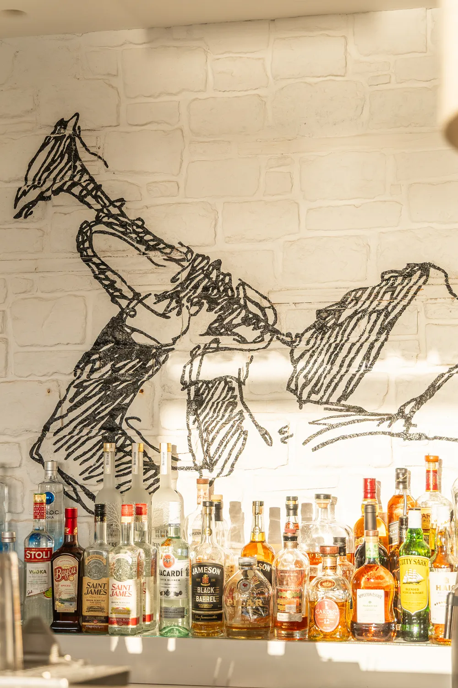

The Sounds
The Music From spiritual jazz to deep electronic beats.
The name says it all: we play "Bebop" (jazz) when you are enjoying your food, and switch to "Joomla" (electronica) for your late-night cocktails. Our music is always carefully curated by us—never just a random playlist on shuffle.
The genres
Five languages, one long conversation.
01
Spiritual Jazz
Coltrane, Alice Coltrane, Pharoah Sanders — the meditative opening of every night.
02
Soul
Warm vocals and vintage grooves that carry the room through dinner service.
03
Organic House
Earthy percussion and analog textures — the transition from plates to nightcaps.
04
Downtempo
Bonobo, Khruangbin, Four Tet — a slow, patient pulse for late conversations.
05
Deep Electronica
Nils Frahm, Floating Points, Jon Hopkins — the spatial soundtrack of the small

